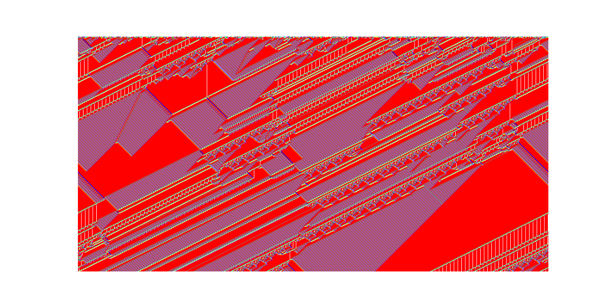

Proyecto creado en Unity con renderizado de estructuras fractales 2D y 3D.
Este proyecto genera fractales recursivamente usando prefabs en Unity. Utiliza transformaciones espaciales (rotaciones, escalas) para crear formas como árboles fractales, Sierpinski y Mandelbrot visuales.
Aprendí sobre programación recursiva en tiempo real, optimización de instancias y gestión de jerarquía de objetos en Unity. También practiqué conceptos de geometría fractal.